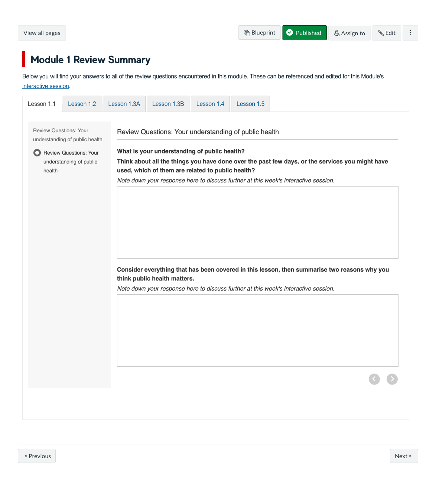
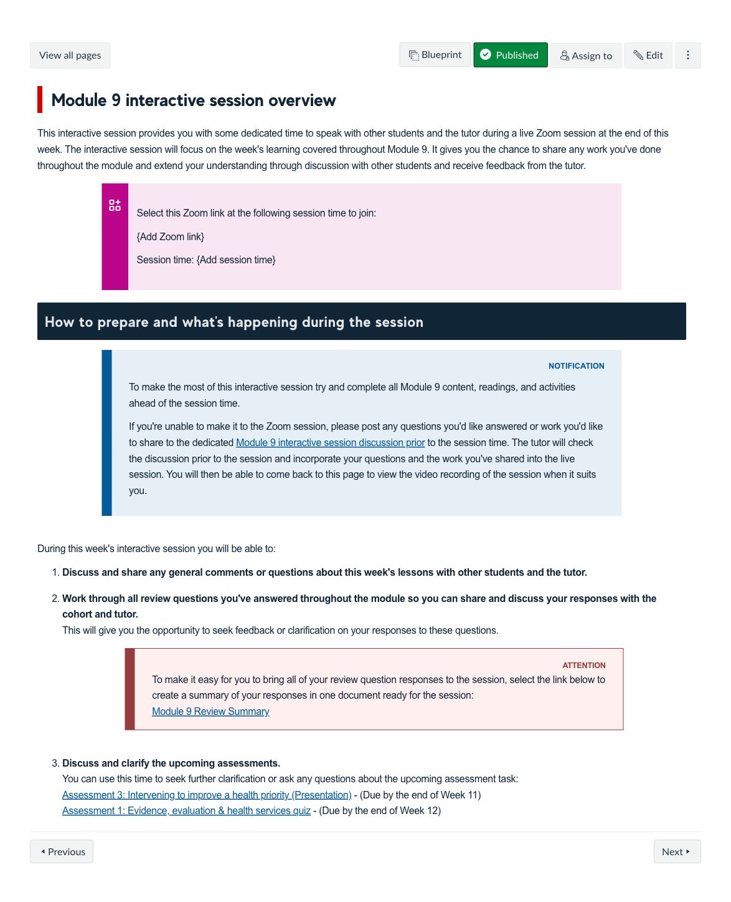

Course Description
Health and Illness in Populations introduces students to a population-based view of health. It draws on a range of disciplines that focus on the health of populations, including epidemiology, health promotion and disease prevention, history, politics, and ethics. The course invites students to develop a critical view of what constitutes public health issues, how they are measured, and potential responses to improve population health.
Learning Outcomes
- Identify major causes of morbidity (sickness) and mortality (deaths) in Australia and globally.
- Describe public health problems and how they are measured using basic epidemiological terminology and calculations.
- Evaluate how social determinants and other risk factors for communicable and chronic disease influence personal and population health.
- Describe the basic principles and salient features of health promotion and disease prevention to improve population health.
- Evaluate the roles and functions of policies and diverse stakeholders, including in government departments and health systems, in defining, influencing and responding to public health issues.
- Identify ethical and economic issues associated with policies and interventions aimed at improving health.
- Identify, critique, synthesise, report and reference appropriate public health literature.
- Participate constructively, as an individual or within groups, in learning activities.
Learning Experience
Topics
- Thinking about health from a population perspective
- Detecting and preventing health issues within populations
- Measuring and interpreting health issues within populations
- Identifying the factors that determine health within populations
- Improving the health of Aboriginal and Torres Strait Islander peoples
- Preventing poor health in populations through health promotion
- Advancing population health with policy and legislation
- Weighing up population health against values and vested interests
- Understanding what public health interventions and programs work
- Using epidemiology to tell compelling stories with data
- Designing research studies to evaluate health interventions
- Evaluating the Australian health system and its role in public health
Development Team

Andrew Gardner
Course Author
Lead

Brianna Morello
Course Author
Lead
Catherine Chittleborough
Course Author
Collaborator
Emma Muhlack
Course Author
Collaborator
Dylan Coleman
Course Author
Collaborator
Margaret Scrimgeour
Course Author
Collaborator

Shona Crabb
Course Author
Collaborator
Andrew Beatton
Learning Designer
Lead
Assessments
-
Quizzes
Short Response Questions
These quizzes have been designed to assess learners understanding of determinants, health promotion & policy.
30%
-
Epidemiology of a health priority report
Report
This written report assesses learners understanding of priority health issues that affect the population and focusses on key epidemiological measures to describe the issue. Learners use information from journal articles, published reports, and internet sources, and reference these appropriately. The assessment reflects real-world reporting styles expected in public health-related organisations.
30%
-
Intervening to improve a healthy priority presentation
Media Task
Learners are asked to create a presentation of 5 to 8 minute that provides summaryof how a health condition or issue can be prevented. It assess the learners understanding of how to respond to public health issues with disease prevention, health promotion, and protection interventions.
40%
Snapshots

An end of module review allows students to check their understanding of the concepts and ideas covered thoughout the course content. It provide a formative learning opportunity for learners to check their own progress and revise areas they are struggling with. " onclick="openSnapshot(this)" >


Learning Resources
-
The five stages of the demographic transition
The demographic transition is a model that describes population change over time from high mortality, including high infant mortality, and high fertility to low mortality and fertility and higher life expectancy. The demographic transition occurs as part of the economic development of a country.

-
Three levels of prevention mapped across a 'stages of disease' continuum.
The three levels of prevention - preventing the occurrence of disease, detecting it early, arresting its progress, and reducing its consequences - are mapped onto the stages of the disease continuum.

-
What outcomes are you interested in measuring?
Andrew Gardner introduces the different types of outcomes you can measure and what's required for evaluating long-term outcomes, impacts, and processes of interventions.